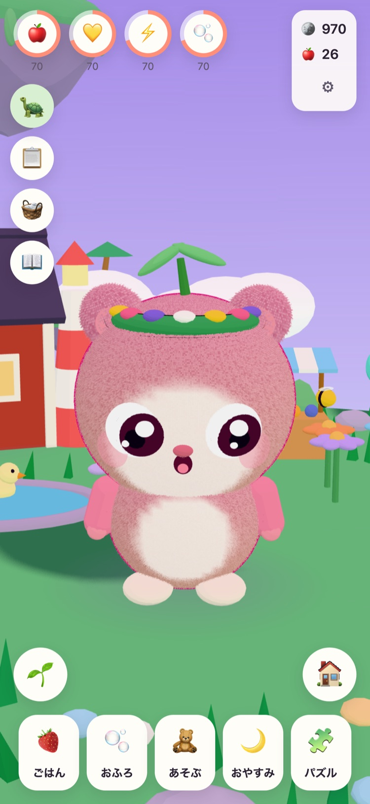
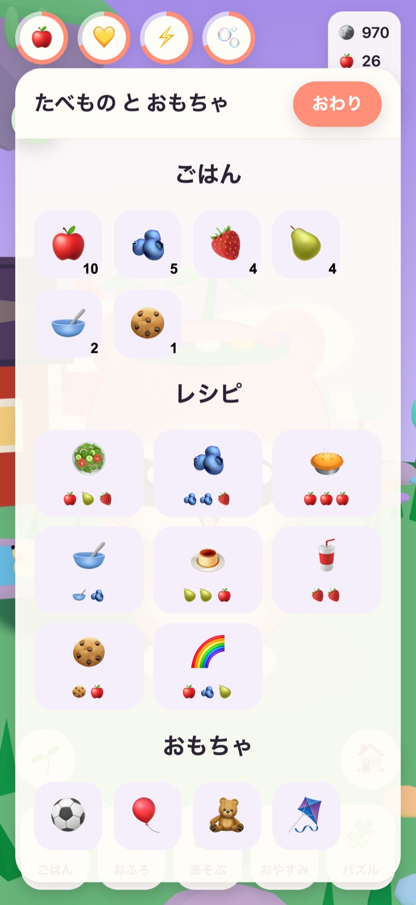
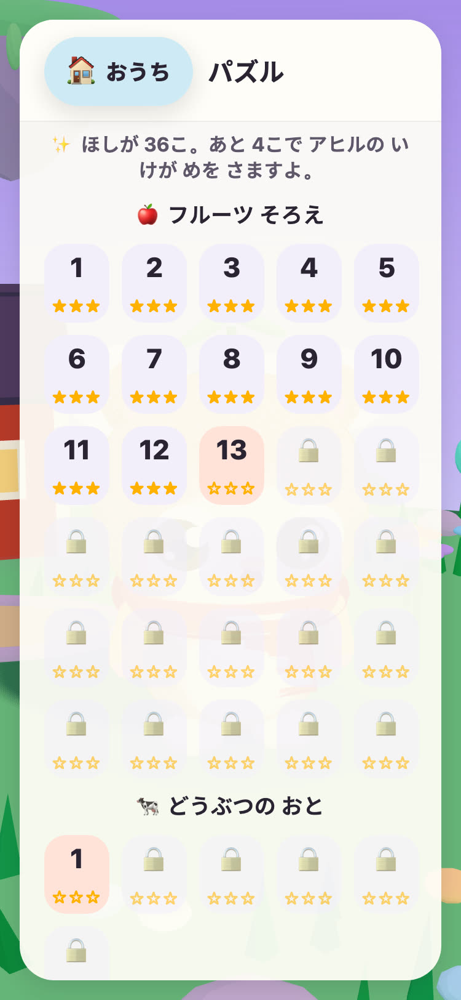
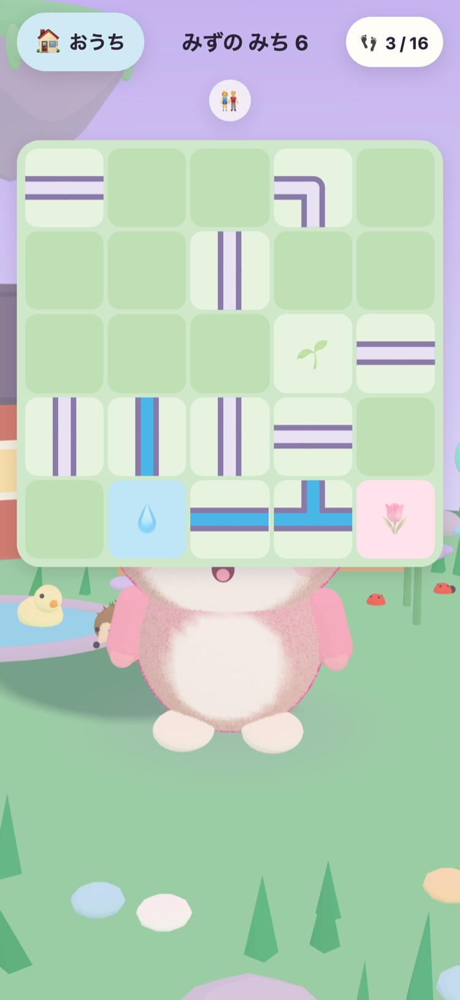
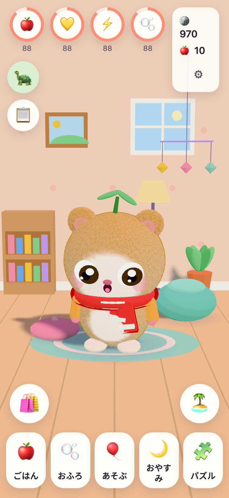
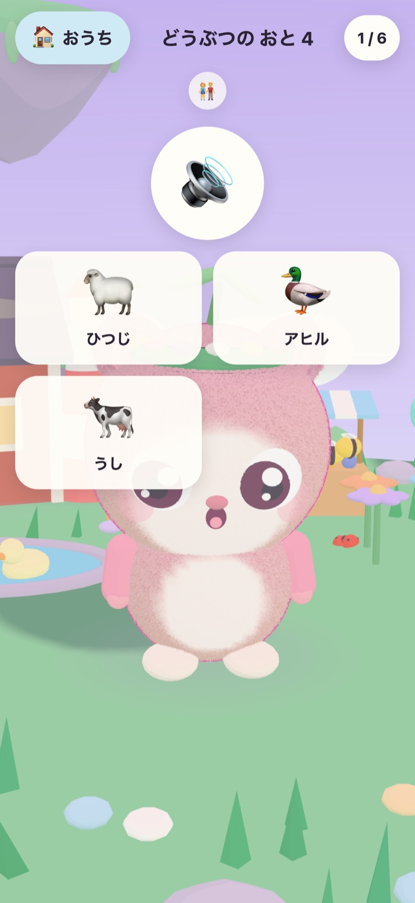

JUNOLittle Worlds
たまごからJunoをかえしてお世話をし、空に浮かぶ島を目覚めさせるやさしいパズルを解きましょう。6〜10歳のお子さまのための、おだやかなゲームです。iPhoneとiPadで遊べます。
こんにちは！あったかい たまごを みっつ みつけたよ。きみのは どれかな？
- 広告なし
- トラッキングなし
- アカウント不要
- タイマーもプレッシャーもなし






自分だけの、小さなお友だち
はらっぱの島を見守る年をとったカメ、おじいちゃんTintinが、あたたかいたまごを3つ見つけました。お子さまがひとつを選び、生まれた子に名前をつけます。その日から、Junoはお子さまだけのお友だち。ごはんをあげて、体を洗って、いっしょに遊んで、お昼寝をさせてあげます。
-
たまごを選ぶ
あたたかいたまごが3つ、色も3つ。お子さまがひとつを選び、かえるところを見守ります。
-
名前をつけて、かわいがる
ごはん、おふろ、あそび、お昼寝。Junoは自分の気持ちを見せてくれて、友情が深まるにつれて大きくなります。
-
島を目覚めさせる
パズルで星をひとつ集めるたびに、はらっぱの島に光が戻ります。やがて花も、ハチも、アヒルも帰ってきます。
ごはん、おふろ、あそび、お昼寝
いろいろな食べものとおもちゃ、おふろのあわ、そして気持ちを見せてくれるJuno。ゲージはゆっくり下がりますが、ゼロにはならないので、Junoがいなくなることはありません。
57のやさしいパズル
「フルーツ そろえ」「きおくの にわ」、そして本物の録音を使った「どうぶつの おと」と「のりものの おと」。星は手数で決まり、時間では決まりません。何度でも無料でやり直せます。
目を覚ます島
「お花ばたけ」にはハチがやってきて、「アヒルの いけ」には水とアヒルが戻り、畑ではたねがりんごやいちごに育ちます。
居心地のいいお部屋づくり
パズルや毎日のチャレンジでもらえるコインで、Junoの部屋の飾りや、着せる服を買えます。コインのおみせには、本物のお金がかかるものはひとつもありません。
読み上げ
まだ字が読めないお子さまのために、おじいちゃんTintinがすべてのセリフを、あたたかい自分の声で読み上げます。もう一度聞きたいときは、おじいちゃんTintinをタップしてください。
保護者メニュー
ペアレンタルゲートの先で、言語、読み上げ、サウンド、おやすみの時間、やさしい休憩のお知らせを設定できます。おやすみの時間になるとJunoは眠り、パズルは朝まで待ってくれます。
21の言語で話します
おじいちゃんTintinは、お子さま自身の言葉で話しかけます。言語は保護者メニューで選ぶことも、端末の設定に合わせることもできます。
English Svenska Dansk Norsk Suomi Deutsch Nederlands Français Español Italiano Português (Brasil) Polski Русский Ελληνικά Türkçe Bahasa Melayu Kiswahili हिन्दी 日本語 한국어 简体中文
ひとりの祖父が作りました
JUNOは、スウェーデンでひとりの祖父が孫娘のために作りました。孫娘が遊んでいるのを、うれしい気持ちで見ていられるゲームです。ゲームに登場するカメのおじいちゃんTintinは、作者本人です。
だから、ルールはシンプルです。せかすものはなし、だますものもなし、お子さまについて何かを集めるものも一切ありません。
無料、広告なし
JUNOは無料でダウンロードでき、広告もトラッキングもアカウントもありません。お子さまが遊んだ内容は、すべてお使いの端末の中にとどまります。プライバシーのページもご覧ください。
JUNO Plusや「冬のパック」は、保護者メニューでペアレンタルゲートを通って、大人が購入できます。どちらも買い切りで、復元もでき、ご家族と共有できます。